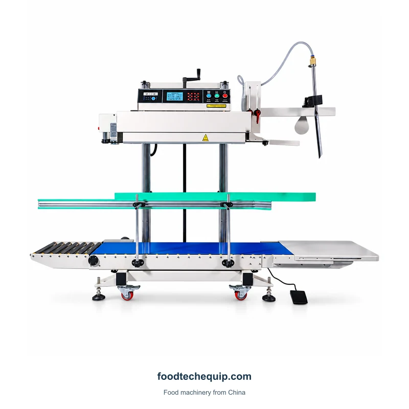

Soudure de sacs
Soudeuse à bande continue
Soudeuse à bande continue pour sachets remplis, avec convoyeur de soutien et socle à roulettes.
Voir l’équipementChoisissez une soudeuse à bande continue selon la façon dont le sachet rempli entre dans la zone de soudure. Comparez un modèle de table et un modèle vertical à convoyeur. Déterminez si l’opération nécessite une mise sous vide ou une injection de gaz.
Soudeuse à bande continue pour sachets remplis, avec convoyeur de soutien et socle à roulettes.
Voir l’équipement
Soudeuse verticale à bande continue avec convoyeur et châssis réglable en hauteur pour présenter les sachets remplis.
Voir l’équipement
Soudeuse verticale à bande avec convoyeur de soutien, proposée en configurations FR-1100V et FRD-1200V.
Voir l’équipement
Soudeuse verticale à bande avec convoyeur, destinée à fermer des sachets avec mise sous vide et injection de gaz.
Voir l’équipement
Scelleuse à bande continue de table dotée d’un convoyeur et d’un ensemble de scellement supérieur pour la manipulation de sacs remplis.
Voir l’équipement
Équipement de soudure de sachets sur convoyeur, pour fermeture sous vide avec injection de gaz.
Voir l’équipement
Soudeuse à bande avec convoyeur, raccords d’injection de gaz et ensemble de soufflage en partie basse.
Voir l’équipement
Soudeuse verticale à bande avec convoyeur et guides de sachets réglables.
Voir l’équipementEssayez un autre mot-clé ou effacez vos filtres.
Indiquer le poids rempli, la hauteur du sac et l’espace au-dessus du produit. Ces détails aident à définir comment un sac atteint la position de scellage et reste soutenu pendant le transfert.
Pour les configurations sous vide ou avec rinçage au gaz, spécifiez les exigences en matière d’atmosphère et d’emballage fini séparément du taux de scellage.
| Zone de sélection | Que comparer | Que fournir |
|---|---|---|
| Soudeuse à bande de table | Place sur le plan de travail et accès au convoyeur pour le chargement et la récupération | Dimensions et masse du sachet rempli, et place sur le plan de travail |
| Soudeuse verticale à bande réglable en hauteur | Soutien du sachet maintenu à la verticale et hauteur de la soudure | Hauteur et masse du sachet rempli et position de la soudure |
| FR-1100V et FRD-1200V | Cadence de soudure indiquée pour chaque modèle et méthode de chargement | Cadence visée en emballages par minute selon le sachet et la manutention |
| Mise sous vide ou injection de gaz | Ordre du retrait de l’air, de l’injection du gaz et de la fermeture pour la configuration choisie | Structure du sachet, atmosphère souhaitée et caractéristiques de l’emballage fini |
Commencez par le sac rempli et sa position d’appui. Incluez toutes les exigences distinctes en matière de portionnement ou de manipulation sous vide afin que le devis couvre les opérations dont vous avez besoin.